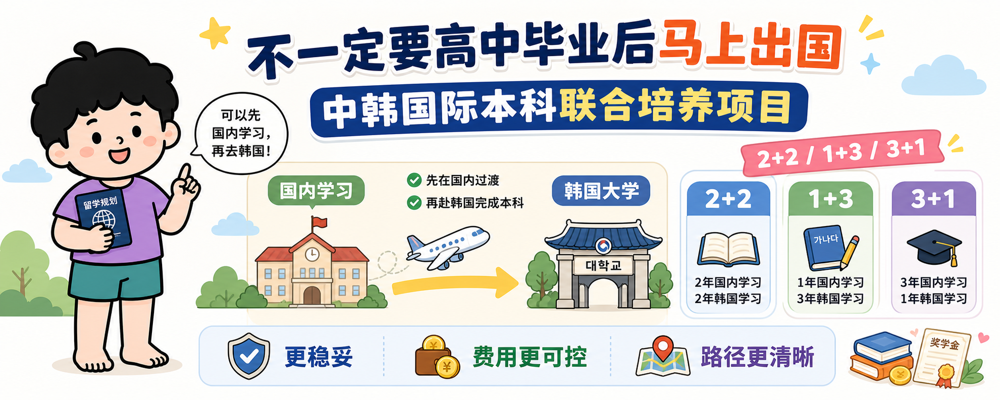

x

国内+韩国项目库
韩国大学地图
韩国大学库
（直升）
国内+韩国项目
留学费用
（奖学金）
韩语(TOPIK)
项目口径
63项
原93复核保留28 + 新增/官方35
收录范围
本科/预科
不纳入专科/高职项目
核对重点
模式+费用
以学校官方简章和链接为准
全部
华北
东北
华东
华中
华南
西南
西北
2+2
1+3
1+4
3+1
3+2
2.5+1.5
0.5+4
0.5+4.5
0.5+0.5+4
2+1+1
4+0
0.5/1+4
传媒/影视
商科/经管
语言/教育
体育/社科
艺术/设计
工科/理工
酒店/旅游
医学/护理
自然科学/生命
计算机/AI
学校搜索
中国学校
地区
韩国合作学校
模式
专业方向
没有找到匹配的项目。